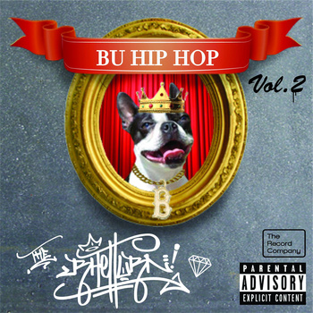

K. Rodman Mannix
About
Events
Projects
Experience
Hobbies
Styles
Bootstrap
Foundation
Custom

![Taken during the summer of 2014, this course covers the theory and the fundamentals of the emerging science of Sabermetrics. The game of baseball is discussed, not through consensus or a fan’s conventional wisdom, but by searching for objective knowledge in hitting, pitching, and fielding performance. The course serves as applied introduction to the basics of data science, a growing field of scholarship, that requires skills in computation, statistics, and communicating results of analyses. Using baseball data, the basics of statistical regression, the R Language, and SQL will be covered.](img/hobbies/sabermetrics.png "Sabermetrics 101")